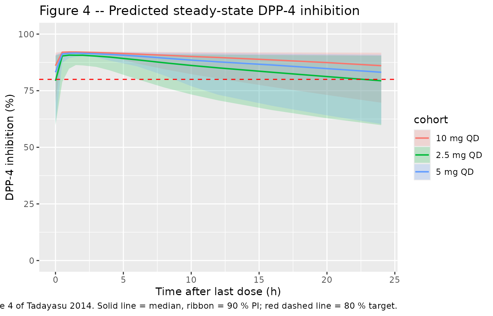
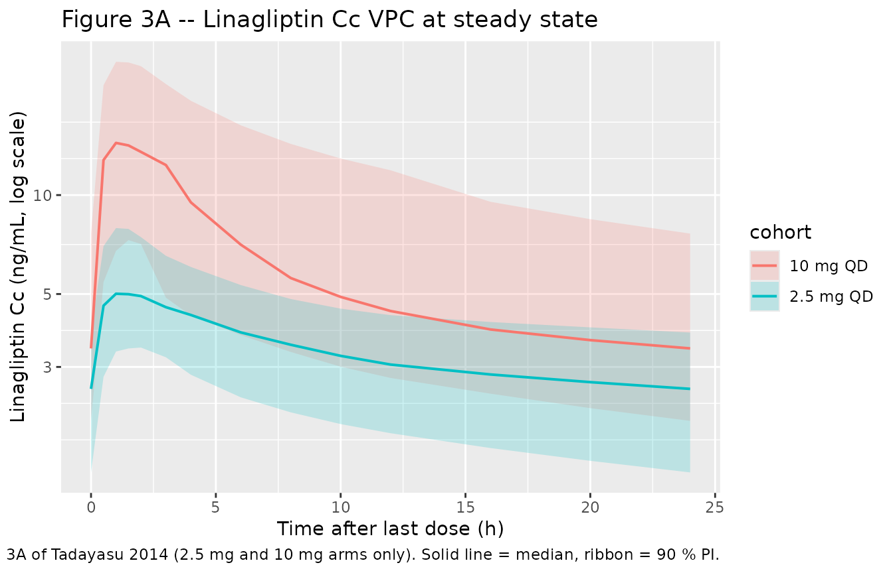

Linagliptin (Tadayasu 2014)
Source:vignettes/articles/Tadayasu_2014_linagliptin.Rmd
Tadayasu_2014_linagliptin.RmdModel and source
- Citation: Tadayasu Y, Sarashina A, Tsuda Y, Tatami S, Friedrich C, Retlich S, Staab A, Takano M. Population pharmacokinetic/pharmacodynamic analysis of the DPP-4 inhibitor linagliptin in Japanese patients with type 2 diabetes mellitus. J Pharm Pharm Sci. 2013;16(5):708-721. doi:10.18433/j3s304.
- Description: Two-compartment target-mediated drug disposition population PK model for linagliptin with quasi-equilibrium concentration-dependent binding to DPP-4 in both the central and peripheral compartments, coupled with an occupancy-based DPP-4-inhibition pharmacodynamic model (DPP-4 inhibition = Emax * Cbound/BMAX in the central compartment), in Japanese patients with type 2 diabetes mellitus (Tadayasu 2014 Table 3).
- Article: https://doi.org/10.18433/j3s304
Population
Tadayasu 2014 analysed a single Phase II trial in Japanese patients with type 2 diabetes mellitus (T2DM). 72 patients were randomised to placebo, 0.5 mg, 2.5 mg, or 10 mg linagliptin orally once daily for 28 days; the final population PK/PD model uses only the 2.5 mg and 10 mg arms (18 patients each, n = 36 total), because the 0.5 mg arm violated the quasi-equilibrium assumption (Tadayasu 2014 Methods, Patient population).
Demographics in the modelled cohort (Tadayasu 2014 Methods):
- Age 40 - 69 years (mean 60.2 in 2.5 mg arm, 59.1 in 10 mg arm).
- Body mass index 18.4 - 34.4 kg/m^2 (mean 26.0 in 2.5 mg arm, 23.8 in 10 mg arm).
- 25 % female (only 9 of the 36 patients).
- 100 % Japanese.
- Baseline fasting plasma glucose 154.7 +/- 25.1 mg/dL (2.5 mg arm) and 158.4 +/- 28.6 mg/dL (10 mg arm); baseline HbA1c 7.1 +/- 0.5 % and 7.2 +/- 0.9 % respectively.
- Individual antidiabetic treatment discontinued 14 days prior to the first drug administration.
The model is fit to 498 + 520 = 1018 plasma concentrations and 520 + 538 = 1058 DPP-4 inhibition observations after exclusion of 9 records with protocol violations (Tadayasu 2014 Table 2).
The same metadata are available programmatically via
readModelDb("Tadayasu_2014_linagliptin")$population.
Source trace
Every ini() parameter in
inst/modeldb/specificDrugs/Tadayasu_2014_linagliptin.R
carries an inline source-trace comment. The table below collects them in
one place for review; numeric values are reproduced verbatim from
Tadayasu 2014 Table 3.
| Equation / parameter | Value | Source location |
|---|---|---|
| 2-cmt TMDD-QE structural ODE | n/a | Tadayasu 2014 Figure 1 (model schematic) |
| QE binding (central + peripheral) | n/a | Tadayasu 2014 Methods, Pharmacokinetic model |
| Occupancy PD: DPP-4 inh = Emax * Cb/BMAX | n/a | Tadayasu 2014 Methods, Pharmacokinetic/Pharmacodynamic model |
lfdepot (F1 fixed = 1) |
1 (fixed) | Table 3 row F1 |
lka (KA) |
1.63 1/h | Table 3 row KA |
lcl (CL/F1) |
121 L/h | Table 3 row CL/F1 |
lvc (V2/F1) |
633 L | Table 3 row V2/F1 |
lq (Q3/F1) |
73.0 L/h | Table 3 row Q3/F1 |
lvp (V3/F1) |
683 L | Table 3 row V3/F1 |
lbmax (BMAX, central) |
6.07 nmol/L | Table 3 row BMAX |
lkd (KD) |
0.108 nmol/L | Table 3 row KD |
lamax2 (AMAX2/F1, peripheral) |
534 nmol | Table 3 row AMAX2/F1 |
emax (Emax fraction) |
0.925 | Table 3 row EMAX (92.5 %) |
| IIV F1 (CV 46.7 %) | omega^2 = 0.19727 | Table 3 row ‘IIV in F1’ |
| IIV KA (CV 73.6 %) | omega^2 = 0.43288 | Table 3 row ‘IIV in KA’ |
| IIV CL (CV 68.8 %) | omega^2 = 0.38754 | Table 3 row ‘IIV in CL’ |
| IIV BMAX (CV 14.2 %) | omega^2 = 0.01996 | Table 3 row ‘IIV in BMAX’ |
| OMEGA matrix | diagonal | Tadayasu 2014 Results, Pharmacokinetic model (BMAX-CL block tested but not retained) |
| PK proportional residual (CV 27.0 %) | propSd = 0.270 | Table 3 row ‘Proportional residual variability PK’ |
| PD residual Y = Y_hat + (100 - Y_hat) * eps | propSd_Dpp4Act = 0.201 | Table 3 row ‘Proportional residual variability PD’ |
Virtual cohort
Original observed concentrations were not released. The simulations below use small virtual cohorts whose dose levels match the published 5 mg, 2.5 mg, and 10 mg arms (the 5 mg arm is the simulation that supported the dose-selection conclusion of the paper).
set.seed(20260520)
n_per_arm <- 60L
make_arm <- function(arm_label, dose_mg, id_offset) {
dose_times <- seq(0, by = 24, length.out = 28) # 28-day QD regimen
ss_obs <- 27 * 24 + c(0, 0.5, 1, 1.5, 2, 3, 4, 6, 8, 10, 12, 16, 20, 24)
obs_times <- sort(unique(c(
seq(0, 27 * 24, by = 6), # coarse pre-SS sampling
ss_obs # dense day-28 SS profile
)))
id_seq <- id_offset + seq_len(n_per_arm)
dose_rows <- expand.grid(id = id_seq, time = dose_times) |>
dplyr::mutate(evid = 1L, amt = dose_mg, cmt = "depot")
obs_rows <- expand.grid(id = id_seq, time = obs_times) |>
dplyr::mutate(evid = 0L, amt = 0, cmt = "Cc")
dplyr::bind_rows(dose_rows, obs_rows) |>
dplyr::mutate(cohort = arm_label, DOSE = dose_mg) |>
dplyr::arrange(id, time, dplyr::desc(evid))
}
events <- dplyr::bind_rows(
make_arm("2.5 mg QD", dose_mg = 2.5, id_offset = 0L),
make_arm("5 mg QD", dose_mg = 5, id_offset = 200L),
make_arm("10 mg QD", dose_mg = 10, id_offset = 400L)
)
stopifnot(!anyDuplicated(unique(events[, c("id", "time", "evid")])))Simulation
mod <- readModelDb("Tadayasu_2014_linagliptin")
sim <- rxode2::rxSolve(
mod,
events = events,
keep = c("cohort", "DOSE")
) |>
as.data.frame() |>
dplyr::as_tibble()
#> ℹ parameter labels from comments will be replaced by 'label()'For deterministic typical-value replication of the per-arm steady-state profile (no between-subject variability), zero out the random effects:
mod_typical <- mod |> rxode2::zeroRe()
#> ℹ parameter labels from comments will be replaced by 'label()'
typical_events <- events |> dplyr::filter(id %in% c(1L, 201L, 401L))
sim_typical <- rxode2::rxSolve(
mod_typical,
events = typical_events,
keep = c("cohort", "DOSE")
) |>
as.data.frame() |>
dplyr::as_tibble()
#> ℹ omega/sigma items treated as zero: 'etalfdepot', 'etalka', 'etalcl', 'etalbmax'
#> Warning: multi-subject simulation without without 'omega'Replicate published figures
Figure 4 – predicted steady-state DPP-4 inhibition
Figure 4 of Tadayasu 2014 shows the predicted steady-state DPP-4 inhibition time profile for 2.5 mg, 5 mg, and 10 mg linagliptin once daily, with the 80 % inhibition target marked in red. The simulation here replicates the median trajectory plus 90 % prediction interval over a single day-28 dosing interval.
fig4 <- sim |>
dplyr::filter(time >= 27 * 24, time <= 28 * 24) |>
dplyr::mutate(time_h = time - 27 * 24) |>
dplyr::group_by(cohort, time_h) |>
dplyr::summarise(
Q05 = quantile(Dpp4Inh, 0.05, na.rm = TRUE),
Q50 = quantile(Dpp4Inh, 0.50, na.rm = TRUE),
Q95 = quantile(Dpp4Inh, 0.95, na.rm = TRUE),
.groups = "drop"
)
ggplot(fig4, aes(time_h, Q50, colour = cohort, fill = cohort)) +
geom_ribbon(aes(ymin = Q05, ymax = Q95), alpha = 0.2, colour = NA) +
geom_line(linewidth = 0.7) +
geom_hline(yintercept = 80, colour = "red", linetype = "dashed") +
coord_cartesian(ylim = c(0, 100)) +
labs(
x = "Time after last dose (h)",
y = "DPP-4 inhibition (%)",
title = "Figure 4 -- Predicted steady-state DPP-4 inhibition",
caption = "Replicates Figure 4 of Tadayasu 2014. Solid line = median, ribbon = 90 % PI; red dashed line = 80 % target."
)
Figure 3A – linagliptin steady-state concentration VPC
Figure 3A of the paper shows a VPC of linagliptin plasma concentrations on day 28; this chunk replicates the 2.5 mg and 10 mg arms (the two arms used in fitting).
fig3a <- sim |>
dplyr::filter(time >= 27 * 24, time <= 28 * 24, cohort %in% c("2.5 mg QD", "10 mg QD")) |>
dplyr::mutate(time_h = time - 27 * 24) |>
dplyr::group_by(cohort, time_h) |>
dplyr::summarise(
Q05 = quantile(Cc, 0.05, na.rm = TRUE),
Q50 = quantile(Cc, 0.50, na.rm = TRUE),
Q95 = quantile(Cc, 0.95, na.rm = TRUE),
.groups = "drop"
)
ggplot(fig3a, aes(time_h, Q50, colour = cohort, fill = cohort)) +
geom_ribbon(aes(ymin = Q05, ymax = Q95), alpha = 0.2, colour = NA) +
geom_line(linewidth = 0.7) +
scale_y_log10() +
labs(
x = "Time after last dose (h)",
y = "Linagliptin Cc (ng/mL, log scale)",
title = "Figure 3A -- Linagliptin Cc VPC at steady state",
caption = "Replicates Figure 3A of Tadayasu 2014 (2.5 mg and 10 mg arms only). Solid line = median, ribbon = 90 % PI."
)
Reproducing published E24,ss values
The simulation paper reports median predicted DPP-4 inhibition 24 h after the last steady-state dose (E24,ss): 79.2 % (2.5 mg), 84.2 % (5 mg), and 87.7 % (10 mg). The typical-value chunk below reproduces these directly.
e24 <- sim_typical |>
dplyr::filter(round(time, 1) == 28 * 24) |>
dplyr::select(cohort, DOSE, Cc_ng_mL = Cc, Dpp4Inh) |>
dplyr::mutate(
paper_E24ss = dplyr::case_when(
DOSE == 2.5 ~ 79.2,
DOSE == 5 ~ 84.2,
DOSE == 10 ~ 87.7
),
abs_diff_pct = round(Dpp4Inh - paper_E24ss, 2)
)
knitr::kable(
e24,
digits = 2,
caption = "Typical-value E24,ss vs Tadayasu 2014 Simulation Results."
)| cohort | DOSE | Cc_ng_mL | Dpp4Inh | paper_E24ss | abs_diff_pct |
|---|---|---|---|---|---|
| 2.5 mg QD | 2.5 | 2.73 | 78.73 | 79.2 | -0.47 |
| 5 mg QD | 5.0 | 3.11 | 84.00 | 84.2 | -0.20 |
| 10 mg QD | 10.0 | 3.67 | 87.76 | 87.7 | 0.06 |
PKNCA validation
PKNCA-derived steady-state Cmax, Tmax, AUCtau, and half-life from the
day-28 simulated dosing interval. The treatment grouping
| cohort + id keeps per-dose-group rollups available for
comparison.
# Day-28 (steady-state) interval: only the 24 h after the last dose are kept
sim_nca <- sim |>
dplyr::filter(time >= 27 * 24, time <= 28 * 24, !is.na(Cc)) |>
dplyr::mutate(time = time - 27 * 24) |>
dplyr::select(id, time, Cc, cohort)
conc_obj <- PKNCA::PKNCAconc(sim_nca, Cc ~ time | cohort + id)
# Dose rows: only the steady-state dose at the start of the chosen interval
dose_df <- events |>
dplyr::filter(evid == 1L, time == 27 * 24) |>
dplyr::mutate(time = 0) |>
dplyr::select(id, time, amt, cohort)
dose_obj <- PKNCA::PKNCAdose(dose_df, amt ~ time | cohort + id)
intervals <- data.frame(
start = 0,
end = 24,
cmax = TRUE,
tmax = TRUE,
auclast = TRUE,
half.life = TRUE
)
nca_data <- PKNCA::PKNCAdata(conc_obj, dose_obj, intervals = intervals)
suppressWarnings({
nca_res <- PKNCA::pk.nca(nca_data)
})
nca_summary <- summary(nca_res)
knitr::kable(
nca_summary,
caption = "Simulated steady-state NCA parameters by dose group (day 28 dosing interval)."
)| start | end | cohort | N | auclast | cmax | tmax | half.life |
|---|---|---|---|---|---|---|---|
| 0 | 24 | 10 mg QD | 60 | 146 [47.8] | 14.0 [43.2] | 1.00 [0.500, 3.00] | 37.3 [8.02] |
| 0 | 24 | 2.5 mg QD | 60 | 88.9 [27.2] | 5.68 [29.3] | 1.50 [0.500, 3.00] | 59.2 [12.0] |
| 0 | 24 | 5 mg QD | 60 | 108 [36.5] | 8.29 [38.5] | 1.50 [0.500, 3.00] | 46.1 [8.89] |
PD-side validation – DPP-4 activity NCA
PKNCA is set up here on the DPP-4 activity output (= 100 - inhibition) as a sanity check that the per-arm activity profile remains low and is dose-ordered.
sim_pd <- sim |>
dplyr::filter(time >= 27 * 24, time <= 28 * 24, !is.na(Dpp4Act)) |>
dplyr::mutate(time = time - 27 * 24) |>
dplyr::select(id, time, Dpp4Act, cohort)
conc_pd <- PKNCA::PKNCAconc(sim_pd, Dpp4Act ~ time | cohort + id)
nca_pd <- PKNCA::PKNCAdata(conc_pd, dose_obj, intervals = data.frame(
start = 0, end = 24, auclast = TRUE
))
suppressWarnings({
nca_pd_res <- PKNCA::pk.nca(nca_pd)
})
knitr::kable(
summary(nca_pd_res),
caption = "Simulated AUC of DPP-4 activity over the day-28 dosing interval (lower AUC = more inhibition)."
)| start | end | cohort | N | auclast |
|---|---|---|---|---|
| 0 | 24 | 10 mg QD | 60 | 271 [29.8] |
| 0 | 24 | 2.5 mg QD | 60 | 365 [35.0] |
| 0 | 24 | 5 mg QD | 60 | 317 [35.9] |
Assumptions and deviations
-
Custom PD residual encoded as proportional error on DPP-4
activity. The paper’s residual model on DPP-4 inhibition is
Y = Y_hat + (100 - Y_hat) * epswitheps ~ N(0, sigma^2). For a symmetric Gaussian residual this is algebraically identical to a proportional residual on DPP-4 activity (= 100 - inhibition), since100 - Y = (100 - Y_hat) * (1 - eps). The model file therefore exposesDpp4Actas the residual-bearing output withDpp4Act ~ prop(propSd_Dpp4Act), and emitsDpp4Inh = 100 - Dpp4Actas a derived quantity. Users with DPP-4 inhibition data should convert to activity (activity = 100 - inhibition) before fitting. -
Concentration unit conversion (nmol/L -> ng/mL).
Tadayasu 2014 reports linagliptin concentrations, BMAX, KD, and AMAX2 in
nmol/L (or nmol). Doses are clinical (2.5, 5, 10 mg). The model uses
nmol/L internally so the published parameters can be used verbatim, but
converts the
Ccoutput to ng/mL via the linagliptin molecular weight 472.54 g/mol so the observation unit is dimensionally consistent with the mg dose. The conversion isCc_ng_mL = Cc_nmolL * MW / 1000. The same pattern is used in the companion non-JapaneseRetlich_2015_linagliptinmodel. - 0.5 mg arm excluded. The paper drops the 0.5 mg arm because the quasi-equilibrium assumption fails when free linagliptin concentrations drop below BMAX (Tadayasu 2014 Discussion, Pharmacokinetics). The packaged model inherits this scope. Simulating sub-2.5 mg doses with this model is outside the validated range; the predictions will be biased because the TMDD-QE assumption no longer holds.
- OMEGA matrix is diagonal. The paper tested a BMAX-CL OMEGA block with R = 0.837 but did not retain it in the final model because it overestimated the variability (Tadayasu 2014 Results, Pharmacokinetic model). The packaged model follows the final-model choice.
-
No subject-level covariates. The paper does not
report covariate effects on any structural parameter (the Japanese
cohort was demographically narrow: 100 % Japanese, 75 % male, age 40 -
69, controlled T2DM). The packaged
covariateDatais therefore empty. -
Simulation scope. The packaged model is suitable
for simulating Japanese T2DM patients at doses 2.5 - 10 mg linagliptin
PO once daily. Extrapolation to other ethnicities, doses < 2.5 mg,
paediatric patients, or patients with renal or hepatic impairment is not
supported by the source data; see
Retlich_2015_linagliptinfor the broader Caucasian / multi-region popPK/PD model with covariate effects.